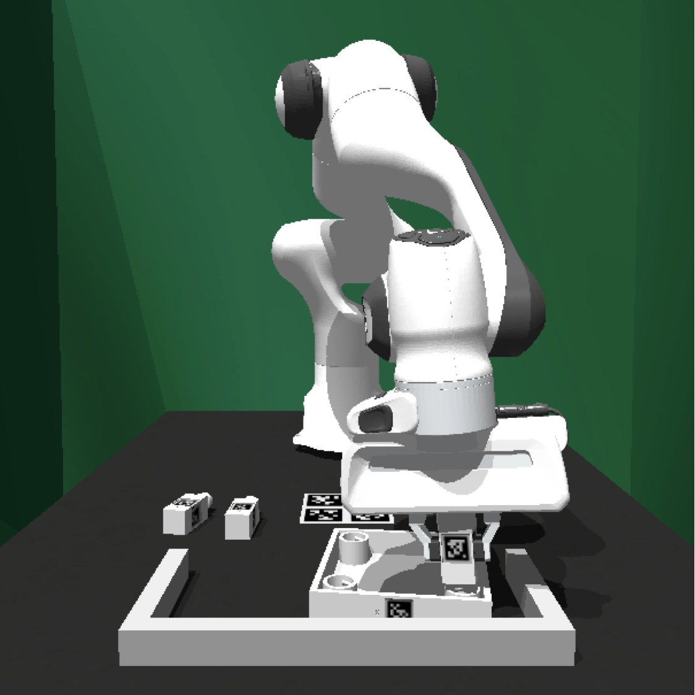
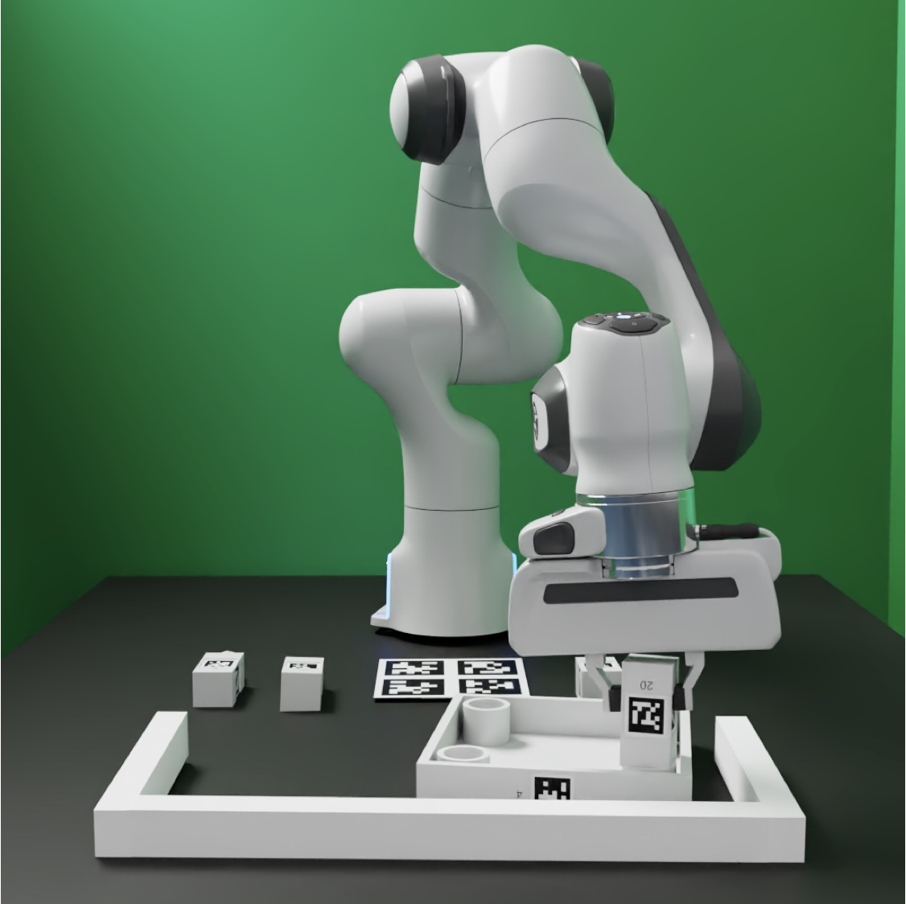
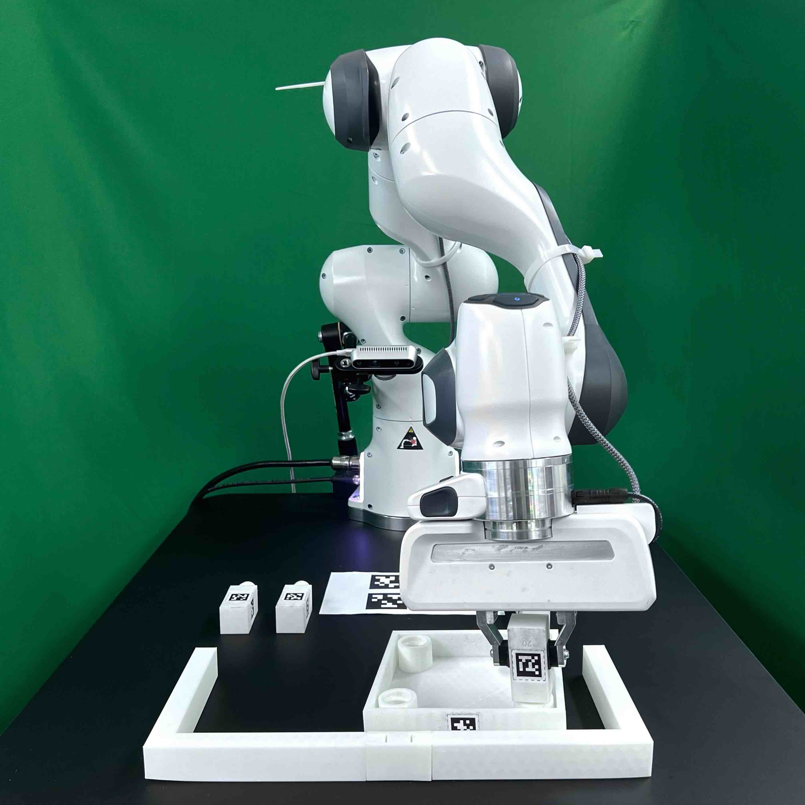

Installing FurnitureSim
Contents
Installing FurnitureSim#
FurnitureSim is a realistic simulation of FurnitureBench based on Isaac Gym and Factory. FurnitureSim enables easy and fast evaluation of new algorithms. You can install FurnitureSim using PyPI or Docker.
 |
 |
 |
|---|---|---|
(a) Simluator |
(b) Offline rendering |
(c) Real-world environment |
Prerequisites
Ubuntu 20.04 LTS
NVIDIA RTX GPU
Download Isaac Gym#
Go to the Isaac Gym website.
Click “Join now” and log into your NVIDIA account.
Click “Member area”.
Read and check the box for the license agreement.
Download and unzip
Isaac Gym - Ubuntu Linux 18.04 / 20.04 Preview 4 release.
Install FurnitureSim using PyPI (Option 1)#
FurnitureSim is available to install via PyPI. You need an NVIDIA driver and CUDA. Please refer to NVIDIA CUDA Installation Guide.
Install Isaac Gym:
cd <path/to/isaacgym>
pip install -e python
Install FurnitureBench, which includes FurnitureSim:
pip install furniture-bench
Install FurnitureSim using Docker (Option 2)#
Install nvidia-docker2 and Anaconda.
Specify whether to pull the client Docker image from Docker Hub or build it locally:
# Case 1: pull from Docker Hub
export CLIENT_DOCKER=furniturebench/client-gpu:latest
# Case 2: build locally
DOCKER_BUILDKIT=1 docker build -t client-gpu . -f docker/client_gpu.Dockerfile
export CLIENT_DOCKER=client-gpu
Set the environment variables following Run Client.
# Set the absolute path to the furniture-bench repo
export FURNITURE_BENCH=<path/to/furniture-bench>
# Set the absolute path to Isaac Gym
export ISAAC_GYM_PATH=<path/to/isaacgym>
Launch the Docker image:
./launch_client.sh --sim-gpu
Test FurnitureSim Installation#
Test FurnitureSim using the following command with a furniture name
<furniture>=[lamp|square_table|desk|drawer|cabinet|round_table|stool|chair|one_leg].
python -m furniture_bench.scripts.run_sim_env --furniture <furniture> --no-action
You can run our scripted agent for
one_legby adding--scriptedto the arguments:
# In the Docker container,
cd /furniture-bench
python -m furniture_bench.scripts.run_sim_env --furniture one_leg --scripted
Note
FurnitureSim may take several minutes to convert 3D furniture meshes into Signed Distance Functions (SDF) on your first run. The converted SDF models will then be cached for fast execution.
FurnitureSim Parameters#
The simulation parameters (e.g., mass, inertia, and dt) can be found in furniture_bench/sim_config.py.